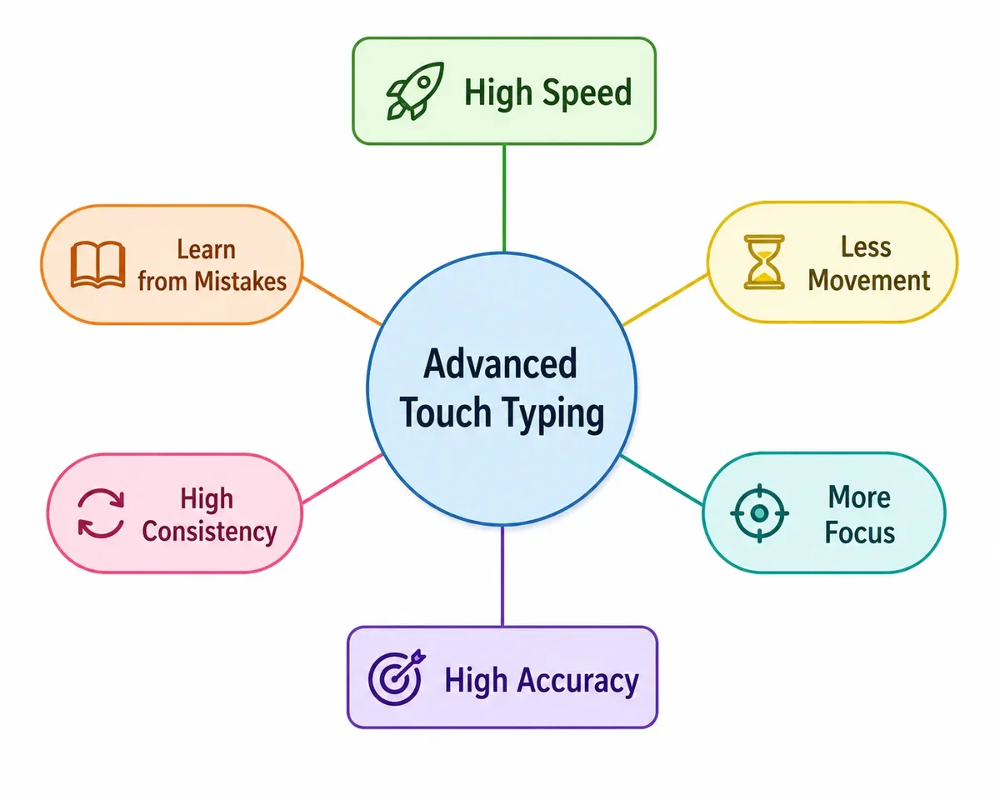
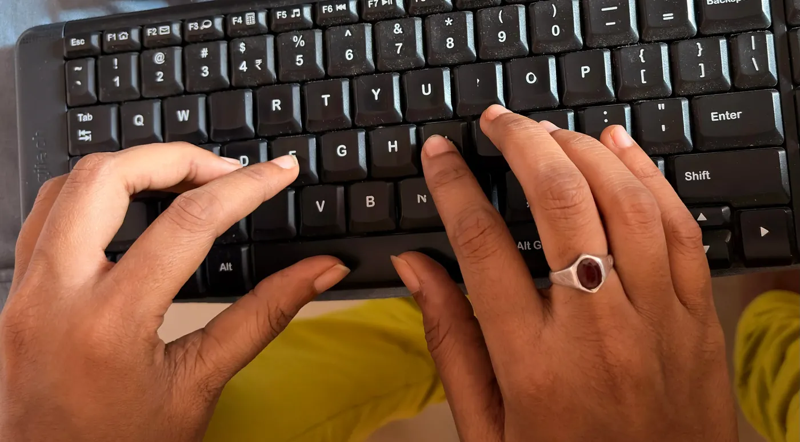
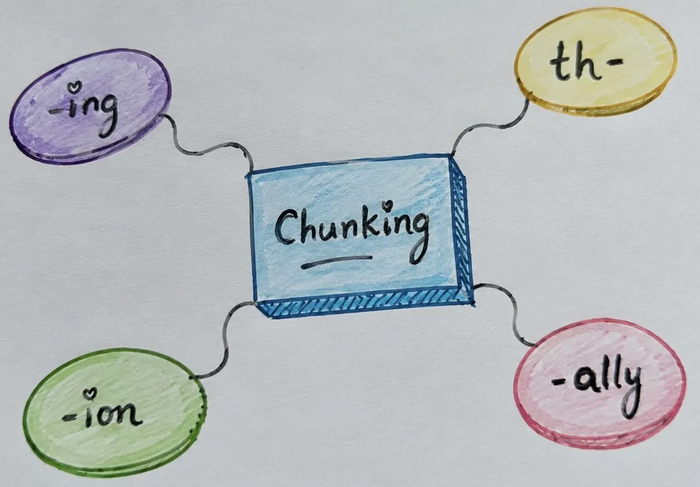
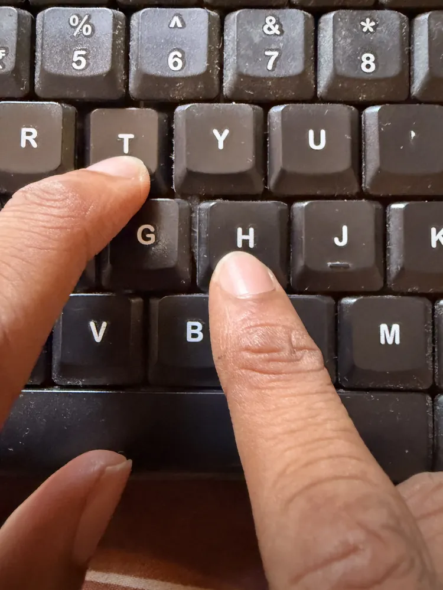
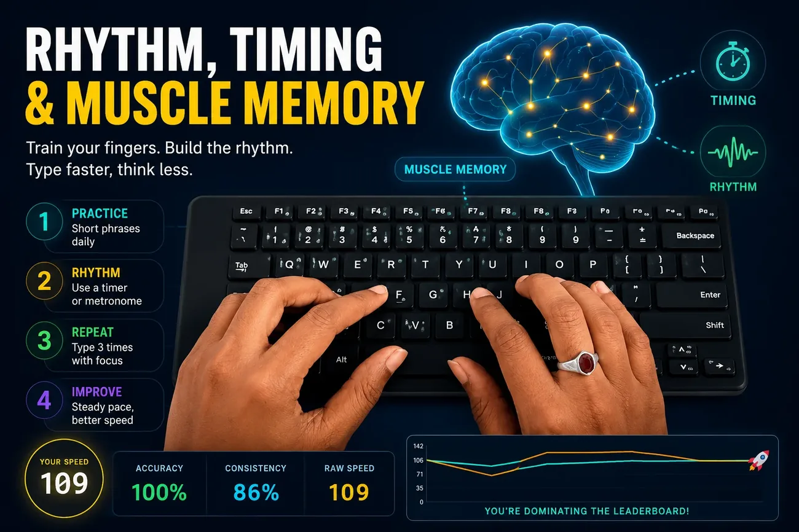

Advanced Touch Typing Techniques for Faster, Cleaner Typing
The foundation of advanced touch typing
Touch typing starts with the home row, but advanced skill comes from controlling movement and developing recognition for letter patterns. Your goal is to keep the fingers stable, the wrists relaxed, and the eyes focused on the screen while your hands flow predictably.
That means the fastest typists are not the ones who “slam” keys; they are the ones who make fewer unnecessary motions and let muscle memory complete common letter combinations. When you build advanced habits, speed grows naturally.

Finger economy: less movement, more precision
Efficient typing uses the smallest practical movement for each keystroke. That is finger economy. You want each finger to travel along one natural arc and avoid stretching across the keyboard unless a key really demands it.
A simple way to practice this is to type a slow home-row passage while intentionally keeping your fingers close to the keys. If a finger must move far, pause and ask whether a different finger or hand could press the desired key with a shorter path.

Chunking: train common letter groups
Chunking is the process of grouping frequent letter combinations, such as “th”, “ing”, “ion”, and “ally”, so your brain types them as a single unit. This reduces start-stop motion and builds a smooth rhythm.
Use drills that repeat one chunk at a time, then move to mixed phrases. For example, practice “thing”, “there”, and “though” to internalize how your fingers cooperate in those sequences.

| Technique | Focus | Drill example |
|---|---|---|
| Finger economy | Minimizing travel | Slow home-row passages with light touch |
| Chunking | Common patterns | Repeated digraph and trigraph drills |
| Rhythm practice | Flow and tempo | Typing phrases in a steady cadence |
| Finger substitution | Efficient hand transitions | Alternating hand words like “available” and “statement” |
Advertisement
Rolling and finger substitution
Rolling is a technique where your fingers press keys in sequence and then relax in a smooth line. It can feel like a wave passing across the keyboard. This is especially useful for repeating letters or keys that are diagonally adjacent.
Finger substitution means replacing a stretched or awkward finger press with a nearby finger that can perform the same result more naturally. For example, when typing “the”, your index finger may press both “t” and “h” while the middle finger handles “e” if that reduces motion.

Rhythm, timing, and muscle memory
Typing quickly depends on timing as much as accuracy. Rhythm drills help you beat the habit of overthinking each keypress. Choose short, high-frequency phrases and repeat them until the cadence feels automatic.
One useful drill is to type the same sentence three times with a metronome or timer. Keep the pace steady, and if accuracy drops, slow down. The point is not raw speed; it is training your fingers to move with consistent timing.

Practice structure for advanced skill
An effective session has a warm-up, a focused skill block, and a performance check. Warm up with slow, precise typing. Then spend 10–15 minutes on one advanced technique, and finish with a short timed test that measures whether your speed is cleaner than before.
Warm up deliberately
Start with home-row repetition and gradually add top and bottom row combinations. This prepares your hands for faster motion.
Stay focused
Work on one advanced technique per session rather than trying to fix everything at once.
Record results
Log WPM, accuracy, and error patterns to see whether the technique improves your typing quality.
Review weak areas
Use your test data to choose the next drill. Fixing consistent mistakes is the fastest way to raise your ceiling.
Common advanced typing habits
High-level typists tend to share these habits:
- They keep their wrists level and fingers curved.
- They look at the screen instead of the keyboard.
- They use the least motion needed for each key.
- They practice deliberately, not aimlessly.
How to measure your progress
Use the typing test to compare your baseline to your advanced practice sessions. Track not only WPM, but also corrected error rate and the number of repeated errors on the same keys.
If you find that your speed increases but errors climb too quickly, slow the drill and focus again on precision. The best long-term improvement happens when your error rate stays under 5% while your speed builds steadily.
Internal links for deeper practice
- Touch Typing Guide — strengthen your basics before using advanced techniques.
- How to Improve Typing Accuracy — make your advanced speed clean and reliable.
- Typing Speed vs Accuracy — learn when to slow down and when to push for higher WPM.
Practice checklist for advanced technique
- Warm up with home-row and top-row drills.
- Choose one advanced focus: economy, chunking, or rhythm.
- Practice with deliberate repetition for 10 minutes.
- Finish with a short timed test and record your stats.
- Review errors and choose the next session’s drill.
Conclusion
Advanced touch typing is not about typing as fast as possible in every session. It is about training your fingers to move efficiently, building strong motor patterns, and keeping your typing clean even when you push speed.
Use this guide to structure your practice, choose the right drills, and measure progress with reliable data. Over time, these techniques will make your typing smoother, faster, and more enjoyable.
Why finger economy and chunking matter more than raw speed
Typists who chase words-per-minute directly often plateau, because speed built on tension and wasted motion breaks down under pressure. Finger economy and chunking attack the actual bottleneck: how much unnecessary distance your fingers travel and how many individual decisions your brain has to make per word. Reduce both, and speed becomes a side effect of efficient movement rather than something you have to force.
Work on the next level
Try the typing test to see how advanced technique practice affects your speed and accuracy today.
Try the Typing Test →